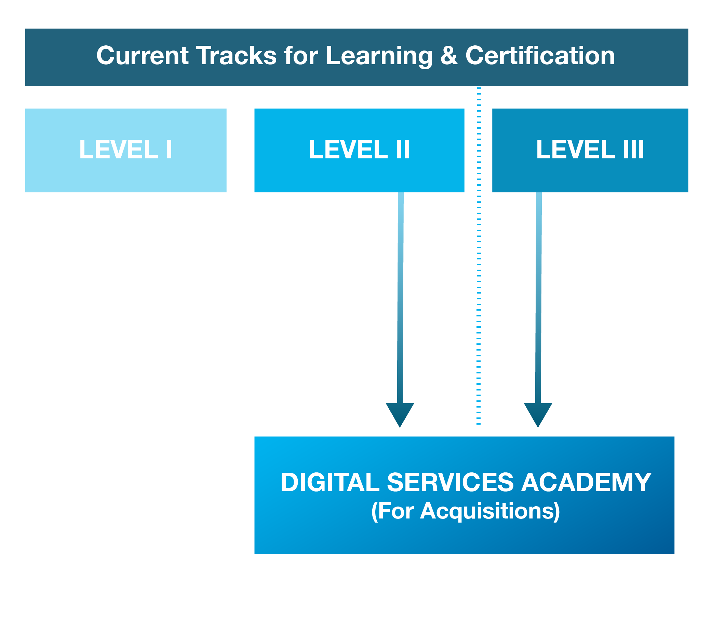

Booz Allen proposes a multi-track program to develop of a community of digital service acquisition experts across the Federal Government. Similar to the pace and change of the tech industry, our proposed program establishes a flexible and scalable framework – both in terms of the content sections and learning methods – that can evolve with new interpretations of acquisition policies, new case studies, and direct community input.
As outlined in Figure 5 below, the program should integrate the experience with the mature acquisitions training offerings provided through established venues such as the DAU and FAI.
We envision a future where the 80-160 hours of this program are supplementary to portions of the Level II and III certification. Ultimately, students with general contracting and procurement experience (similar to Gary and Emma of the personas described earlier), will participate in a pilot program through already mandated and budgeted training for their respective agency. The program aims to quickly promote and incorporate experience through existing venues for affected agencies such as the Treasury Acquisition Institute (TAI).
Depending on the participant and agency’s competing priorities, we highly recommend the coordination of this program with a rotational program with USDS to support the acquisitions planning and execution of a digital service initiative across government. At the end of the program, the new digital service contracting professionals will visibly exhibit the knowledge and behaviors outlined in the 13 digital service plays and will become stewards for the evolving IT contracting landscape.